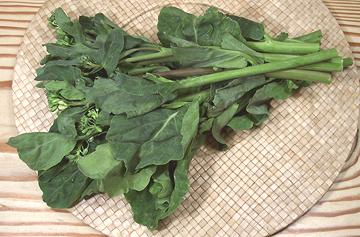

Gai Lan / Chinese Broccoli

[Gai Lan, Kai-lan (China); Chinese Kale; Phakkhana (Thai); Cai Ro (Viet);
Pak Kaat Naa (Laos); B. oleracea Group Alboglabra]
While it looks a lot like Italian Rapini, Chinese Broccoli is related
to European broccoli and cabbages while Rapini is a turnip green related
to most other Asian greens. It is different in form from European broccoli
having thinner more tender stems, tiny flower heads and a lot of large
leaves.
The stems are always used and the white flowers do not become
bitter so are also included with the rest of the plant when
cooking. This is a very important vegetable in the cooking of China and
Southeast Asia, so it is commonly available in markets serving those
communities.
More on Asian Greens.
Buying:
Find Gai Lan in markets serving an East or Southeast
Asian community, and in farmer's markets that include one or more Asian
vegetable growers. Look for fresh looking leaves and avoid bunches were the
larger leaves are starting to show spots. Flower heads are fine even if
a few of the white flowers are starting to open.
Storage:
Store in the refrigerator loosely bagged in
plastic and use within a couple of days - once you see spotting on the
outer leaves flavor and appearance degrade rapidly.
Prep:
Separate the leaves and tender tips from the stalks,
including the leaf stems which can be tougher than the main stalks. Slice
stalks on a shallow diagonal ("horse ears" in Chinese terminology) starting
about 1/2 inch at the big end and increasing to about 1-1/4 inches at the
thin end. Cut or tear leaves into pieces roughly 1-1/2 to 2 inches on a side.
Keep separate.
Another method is to split the large stems in half and cut to lengths
or 1-1/2 inches or so.
Cooking:
This vegetable is most commonly steamed or
stir fried, then simmered. Wherever possible give the stalks about 3 to
4 minutes lead over the leaves. The leaves should end up uniformly wilted
and the stalks should be just crisp tender, the larger pieces still a bit
crunchy.
Many Asian recipes have you steam whole Gai Lan and make a sauce to
pour over it. These recipes depend on Gai Lan that's small, young and
tender. Most Gai Lan sold here in Southern California (and most elsewhere
in North America probably comes from here) is harvested much larger so is
better steamed cut as described above.
cb_brocccz 081014 - www.clovegarden.com
©Andrew Grygus - agryg@clovegarden.com - Photos on
this page © cg1 - Linking to and
non-commercial use of this page permitted